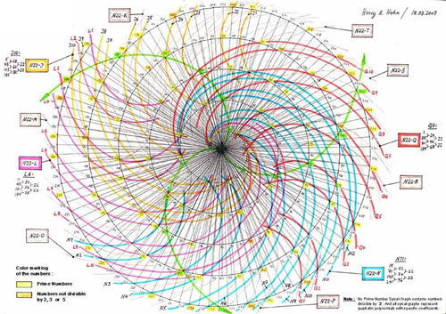

En la actualidad existen muchos algoritmos computacionales que simulan el algoritmo de Euclides. A continuación te presentamos algunos de ellos:
***
En Java:
***Primero se declara una función llamada "Euclides", la cual se evaluará en las variables enteras "n1" y "n2".
\( int Euclides(int n1, int n2) \ \{ \)
***A continuación se genera un ciclo en el cuál se obtiene el residuo de la división entre n1 y n2 mediante "%", el proceso se repite hasta que el residuo sea cero, y por el algoritmo explicado al inicio, sabemos que el penúltimo residuo es el MCD.
\( int r = n1 % n2; \)
\( while (r != 0) \ \{ \)
\( n1 = n2; \)
\( n2 = r; \)
\( r = n1 % n2; \)
\( \ \} \)
\( return\quad{}n2; \)
\( \ \} \)
***
En C:
***En las siguientes dos líneas lo que hace el código es llamar a 2 tipos de librerías que necesita el programa para poder hacer operaciones algebraicas, las librerías son "stdio.h" y "stdlib.h".
\( \# include < stdio.h > \)
\( \# include < stdlib.h > \)
***"int main()" Es la función principal del programa, dentro de ésta se deben declarar las variables y funciones globales que se utilizarán en todo el programa.
\( int main() \)
\( \ \{ \)
***Aquí se coloca la palabra “int” la cual está declarando la existencia de tres números enteros, "printf" permite que el usuario pueda introducir un valor, el cual se le asignara a "n1" con ayuda de "scanf". El mismo proceso se hace para "n2"
\( int r=0,n1,n2; \)
\( printf("introduzca n1: "); \)
\( scanf("\%d",\&n1); \)
\( printf("introduzca n2: "); \)
\( scanf("\%d",\&n2); \)
***A continuación se genera un ciclo de tipo "if", lo que se hace es sacar el residuo del cociente de los dos números que se introdujeron, mediante "%", proceso se repite varias veces hasta que el residuo sea cero, como se explicó al inicio de la unidad.
\( if (r==0) \)
\( \ \{ \)
\( while(n2>0) \)
\( \ \{ \)
\( r=n2\%n1; \)
\( n1=n2; \)
\( n2=r; \)
\( \ \}; \)
***Finalmente "print" muestra en la pantalla el valor del MCD y para finalizar el programa la función principal se regresa a cero mediante "return 0".
\( printf("el MCD:\%d",\&n1); \)
\( return 0; \)
\( \ \} \)
\( \ \} \)
***
En C++:
***En las siguientes dos líneas lo que hace el código es llamar a 2 tipos de librerías que necesita el programa para poder hacer operaciones algebraicas, las librerías son "stdio.h" y "stdlib.h".
\( \# include < stdio.h > \)
\( \# include < stdlib.h > \)
\( using namespace std; \)
***"int mcd(int x, int y)" Es una función, en la cual se está declarando que se va a trabajar con dos valores enteros, "x" y "y".
\( int mcd(int x , int y)\ \{ \)
>***Dentro de la función se declara otra variable , "t", y después se analiza como son los valores de "x" y "y", si estos son negativos, se cambian a positivos, a la variable t se le asigna el valor más pequeño entre "x" y "y".
\( int t; \)
\( x = (x < 0) ? -x:x; \)
\( y = (y < 0) ? -y:y; \)
\( t = (x < y) ? x : y; \)
***A continuación se genera un ciclo de tipo "while", lo que se hace es sacar el residuo del cociente de "x" entre "t" y "y" entre "t", el ciclo se detiene cuando alguno de los dos residuos es cero, lo cual significa que ya se encontró el MCD.
\( while ( (x \% t) || (y \% t)) \)
\( --t; \)
\( return t; \)
\( \ \} \)
\( int euc(int x,int y)\ \{ \)
\( return (!y) ? x : euc(y,x\%y); \)
\( \ \} \)
***A continuación se solicita al usuario que introduzca el valor de "x" y "y" mediante "cout" y "cin". Finalmente se imprime el valor del MCD, el cual se obtiene al llamar la función “mcd()”, evaluada en los valores "x" y "y" que se acaban de introducir.
\( int main() \)
\( \ \{ \)
\( int x,y; \)
\( cout << "x: "; \)
\( cin >> x; \)
\( cout << "y: "; \)
\( cin >> y; \)
\( cout << "MCD: " << mcd(x,y) << endl; \)
\( cout << "MCD (euclides): " << euc(x,y) << endl; \)
\( \ \} \)
***

La imagen muestra la representación de la secuencia de un algoritmo, tal algoritmo es la espiral de Teodoro cuya geometría tiene varias propiedades incluyendo una que se relaciona con el MCD.